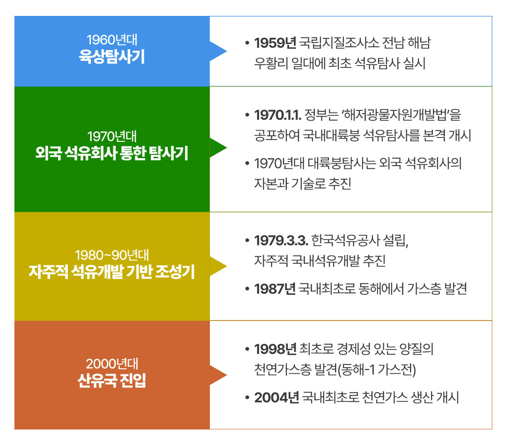
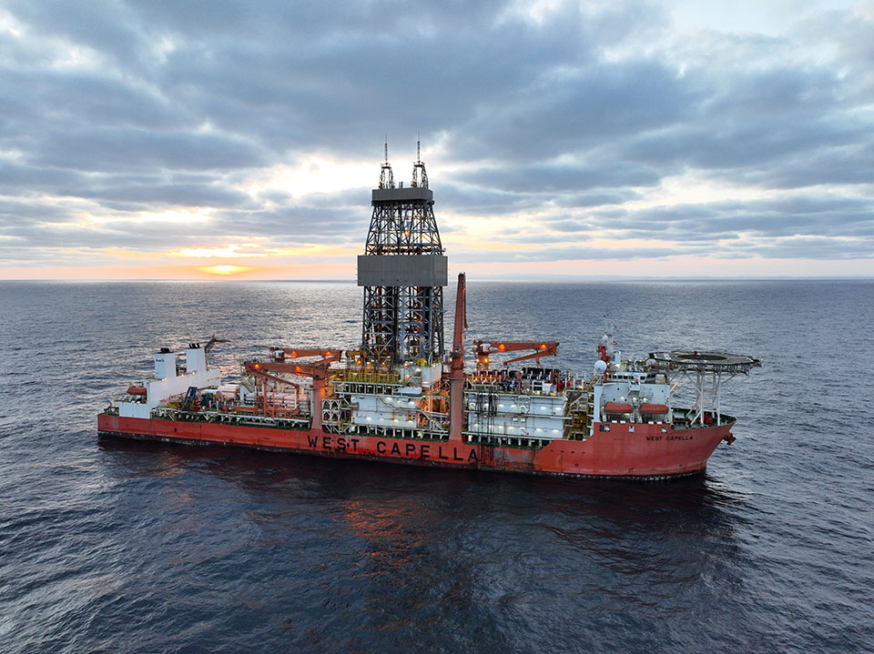
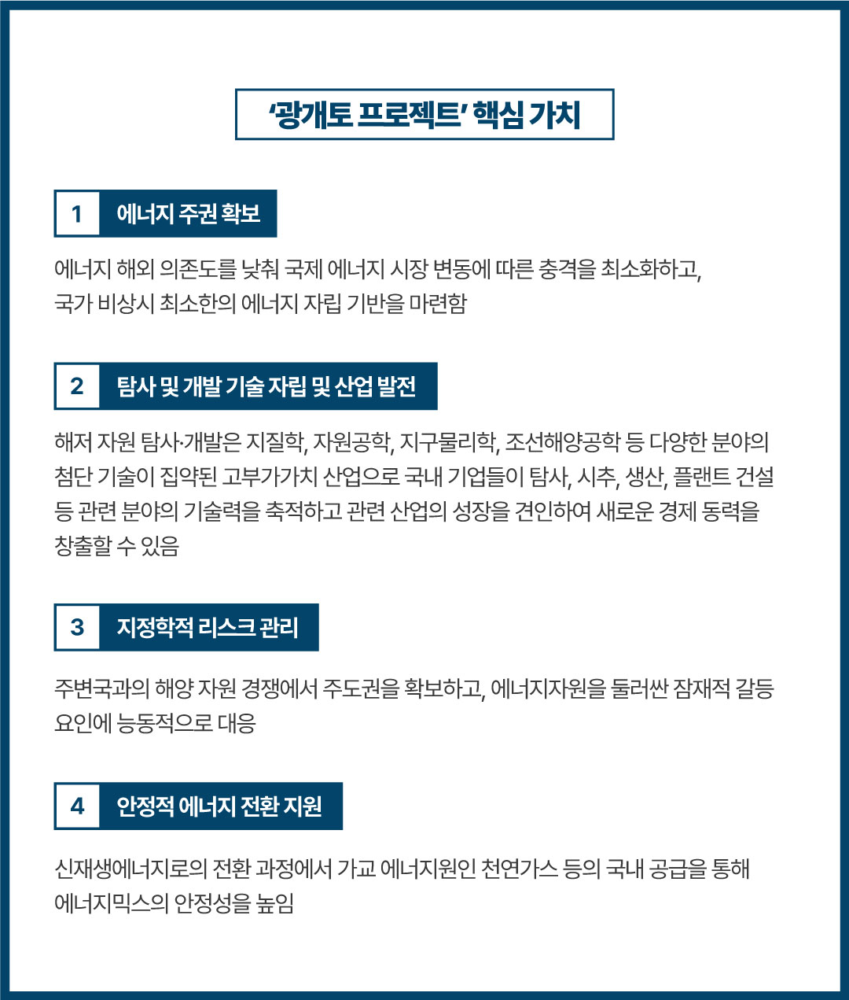
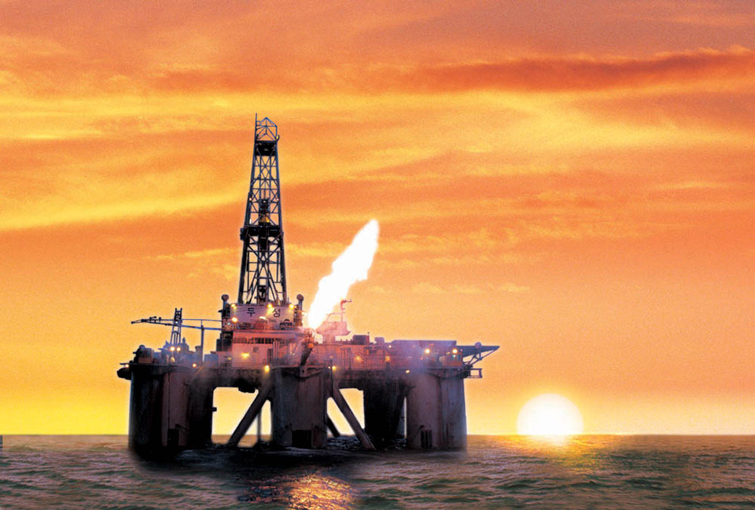

국내 석유개발의 역사
우리나라에서도 과거 역청질 석유가 산출되었거나, 최소한 자연적으로
지표에 유출된 유징(油徵)이 관찰되었다는 기록이 옛 문헌에 전해진다.
김부식의 삼국사기에는 “신라시대 진평왕 31년 정월 모지악의 땅이
타기 시작하여 그해 10월에 꺼졌다.”, “무열왕 시대에 토함산의 땅이
타다가 삼년 만에 꺼졌다.”는 기록이 남아 있다. 우리나라에서
처음으로 석유를 개발하기 위하여 광구를 출원한 사람은 1939년 진주시
장재동에 광구를 출원했던 정덕생이었다. 그는 지하 20m까지 뚫었다.
또 1939년 충남 천원군 병천면 병천리에 살던 강해욱은 충북 진천면
일대에 석유광구를 출원하여 지하 20m까지 굴착한 바 있다.
1960년대 초기 육상 석유탐사는 전남 해남군 우황리 일대 지역을
중심으로 국립지질조사소에 의해 지질조사 및 연구용 시추가
실시되었으며, 1964년도부터는 민간인 정우진과 국립지질조사소가
경상북도 포항지역 제3기층을 대상으로 석유탐사를 1970년대 중반까지
실시하였으나, 석유부존 가능성이 희박한 것으로 판명되어 육상에서의
석유탐사는 더 이상 추진되지 못하였다. 1970년대 외국 석유회사들이
조광권을 설정하여 한정된 지역에 대하여 간헐적으로 이루어지던
국내대륙붕 석유탐사는 1979년 한국석유공사 설립 이후 본격적으로
이루어졌다.

현시대에 에너지는 문명의 숨결인 동시에 보이지 않는 전쟁터이다. 아침에 눈을 떠 스마트폰을 확인하는 순간부터 밤에 자리에 들 때까지, 우리의 일상에서부터 국가 경제의 거대한 흐름에 이르기까지 에너지 없이는 단 하루도 영위될 수 없다. 그러나 ‘자원빈국’ 대한민국은 에너지의 90% 이상을 해외 수입에 의존하며(에너지경제연구원, 2024), 이는 국제 정세 변화에 따른 공급 불안정 및 가격 변동 위험에 고스란히 노출되어 있음을 의미한다. 특히 석유와 천연가스는 현대 산업과 생활의 필수재로서, 이를 둘러싼 한반도 주변의 보이지 않는 ‘자원전쟁’은 우리의 에너지 안보를 끊임없이 시험하고 있으며, 이는 우리가 늘 긴장의 끈을 놓을 수 없음을 뜻한다.

웨스트 카펠라호(국내대륙붕 시추)격변하는 글로벌 에너지 시장과 우리의 현실
세계 에너지 시장은 그 어느 때보다도 역동적인 변화를 겪고 있다. 주목할 점은 미국이 버락 오바마 행정부 이후 정당과 관계없이 자국 내 석유·가스 탐사 및 개발을 꾸준히 확대하며(그림 1) 에너지 패권 강화를 지속하고 있다는 것이다. 셰일 혁명을 통해 에너지 수입국에서 수출국으로 발돋움한 이후에도, 에너지 자립과 산업 보호를 위한 미국의 이러한 행보는 자원빈국인 우리에게 시사하는 바가 크다. 이는 단순한 경제적 성과와 에너지 자립을 넘어 국제 에너지 가격에 대한 영향력 확대, 대외 정책에서의 전략적 자율성 확보 등 패권 강화의 수단으로까지 활용되고 있다. 이러한 동향은 자원이 풍부한 여러 국가에서도 나타나고 있으며(U.S. EIA, 2024), 에너지 안보가 곧 국가 경쟁력의 핵심임을 명확히 보여준다.

1964-2024 미국 내 석유 및 가스 생산량 변화 (Olson, 2024)
동시에,
제4차 산업혁명과 디지털 전환의 가속화는 에너지 수요의 폭증을
예고하고 있다.
인공지능(AI), 빅데이터, 고성능 컴퓨팅에 기반한 데이터센터 운영 등
미래 첨단 산업은 막대한 전력을 소모하며, 이러한 기술을 선도하는
국가일수록 안정적인 에너지 확보에 사활을 걸어야 할 것이다.
우리나라의 경우, 반도체, 이차전지, AI 등 첨단 기술 산업을 국가
성장 동력으로 삼고 있지만, 정작 이러한 산업의 근간이 되는 에너지
자립도는 현재까지도 매우 낮은 상황이며, 이는 미래 산업 경쟁력
확보에 있어 심각한 제약 요인이 될 수 있다.
이러한 세계 흐름 속에서 동북아 3국의 자원 개발 경쟁은 그 어느
때보다 치열하게 전개되고 있다.
최근 집계된 통계에 따르면 한국의 국내 석유·가스 탐사시추 실적은
48공에 그친 데 비해 일본은 813공, 중국은 4만 8779공에
달한다(김민중, 2024).
이 압도적인 격차는 한반도 주변 해역의 잠재 자원에 대한 주도권
경쟁에서 우리가 얼마나 소극적이었는지를 단적으로 나타낸다. 물론
탐사시추가 곧 자원 개발의 성공을 보장하는 것은 아니지만, 적극적인
탐사 활동은 자원 부존 가능성에 대한 과학적 데이터를 축적하고, 자원
개발에 대한 기술력을 높이며, 나아가 잠재 자원에 대한 주권적 권리를
확보하기 위한 가장 기본적인 전제조건이다.
과거 우리나라도 동해-1 가스전 개발 성공이라는 값진 경험이 있음을
주목할 필요가 있다. 비록 그 규모가 국내 가스 소비량에 비하면 크지
않았지만, 우리에게 ‘산유국의 꿈’을 현실로 만들 수 있다는 자신감을
심어주었고 국내 자원 개발의 중요성을 일깨워주었다. 그러나 이후
후속 탐사 및 개발 노력이 기대만큼 활발하게 이어지지 못하면서,
동북아 자원 경쟁 구도에서 우리의 목소리는 점차 작아질 수밖에
없었다. 이러한 소극적인 자세는 단순히 경제적 기회의 상실을 넘어,
미래 에너지 안보의 주도권을 스스로 포기하는 결과를 초래할 수
한다는 점에서 심각한 우려를 낳고 있다.

동해-1 가스생산시설
미래 에너지 수요와 ‘광개토 프로젝트’의 시대적 사명
다가올 미래는 인류에게 더 많은, 그리고 더 안정적인 에너지 공급을
요구하고 있다. 특히
생성형 AI(인공지능) 및 거대언어모델(LLM)이 우리의 일상생활 속에
더욱 깊숙이 확대 적용될수록, 이를 구동하고 유지하는 데 필요한
에너지의 양이 기하급수적으로 늘어날 것은 자명하다.
미국 전력연구소(EPRI)의 보고서에 따르면 AI 기반의 정보검색은
일반적인 인터넷 검색보다 10배 정도 많은 전력이 소요된다(Aljbour
등, 2024). 이에 전문가들은 향후 AI 기술이 사회 전반에 확대될 경우,
전 세계 데이터센터의 전력 소비량이 현재의 수 배에서 수십 배까지
증가할 수 있다고 경고하며, 이러한 ‘에너지 수요폭증’ 시대에
대비하기 위해서는 기존의 에너지 공급 방식과 정책에 대한 근본적인
성찰과 혁신적인 접근이 필요함을 강조한다. 단순히 신재생에너지로의
전환만으로는 폭증하는 수요를 감당하기 어려울 수 있으며, 안정적인
기저부하를 담당할 수 있는 에너지원의 확보가 병행되어야 한다.
바로 이 지점에서 한국석유공사의 ‘광개토 프로젝트’가 가지는 의미와
가치가 빛을 발한다. 이 프로젝트는 과거 한반도의 영토를 크게
확장했던 광개토대왕의 기상과 도전 정신을 이어받아, 국내 대륙붕을
포함한 잠재 유망 지역에 대한 체계적이고 공격적인 탐사와 개발을
통해 대한민국의 에너지 영토를 넓히겠다는 의지를 담고 있다. ‘광개토
프로젝트’는 단순히 석유나 가스를 찾아 나서는 탐사 활동을 넘어,
대한민국의 자원 탐사 및 개발(E&P) 기술 자립, 에너지 주권 확보,
그리고 미래의 예측 불가능한 지정학적 리스크에 능동적인 대응과 미래
산업에 필요한 에너지의 안정적인 공급을 위한 국가적 에너지 안보
전략의 핵심으로 볼 수 있다.

특히, ‘광개토 프로젝트’는 특정 에너지원에 치우치지 않는 ‘에너지믹스(Energy mix)’ 전략의 중요한 한 축을 담당할 수 있다. 탄소중립 목표 달성을 위한 신재생에너지로의 전환이 시대적 과제임은 분명하지만, 그 과정은 한순간에 이뤄질 수 없으며 오랜 시간과 막대한 투자가 필요하다. 특히 간헐성과 저장의 어려움이라는 신재생에너지의 한계를 보완하고 안정적인 기저 발전을 담당하기 위해서는 천연가스와 같은 탄소를 상대적으로 적게 배출하는 가교 에너지원의 역할이 중요하다. ‘광개토 프로젝트’를 통해 가용한 모든 에너지원에 대한 탐사와 개발을 적극적으로 추진하며, 미래 에너지 대전환 시대의 든든한 가교역할을 수행할 것으로 기대된다.

일출과 시추선이러한 중대한 가치를 지닌 임무를 수행하는 데 있어 한국석유공사의 역할은 절대적이다. 우리나라를 대표하는 석유 개발 전문 공기업으로서, 한국석유공사는 그동안 축적해 온 기술력과 노하우, 그리고 해외 자원 개발 경험을 바탕으로 ‘광개토 프로젝트’를 성공적으로 이끌어야 할 책임과 사명을 안고 있다. 과거 삼국시대에 광개토대왕이 드넓은 영토를 개척하며 우리 민족의 기상을 떨쳤듯, 한국석유공사의 ‘광개토 프로젝트’가 21세기 대한민국의 에너지 영토를 확장하고, 에너지 주권을 굳건히 세우는 위대한 여정이 되기를 응원한다.
에너지경제연구원. (2024). 에너지통계월보 8월. 에너지경제연구원.
Olson, J. [@jon-olson-81040ab]. (2024, May 15). Oil and gas sustainability and petroleum engineering education [Post]. LinkedIn. https://www.linkedin.com/posts/jon-olson-81040ab_oilandgas-sustainability-petroleum-activity-7293338628028514305-J3Li/
U.S. Energy Information Administration. (2024, May 13). Permian Basin leads U.S. crude oil production growth, but other regions also increase. Today in Energy. https://www.eia.gov/todayinenergy/detail.php?id=54139